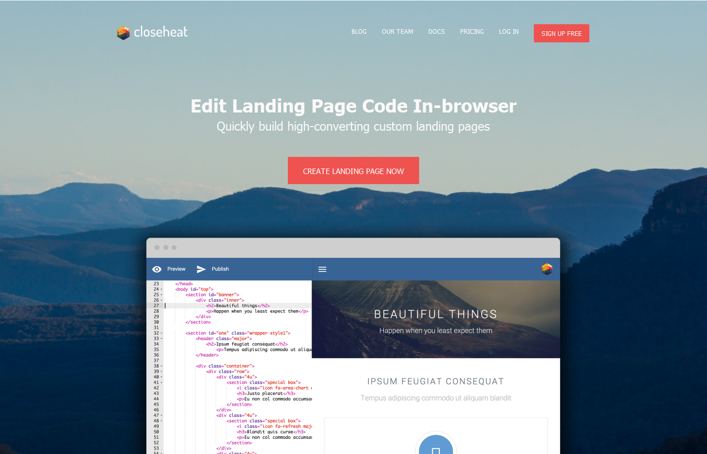
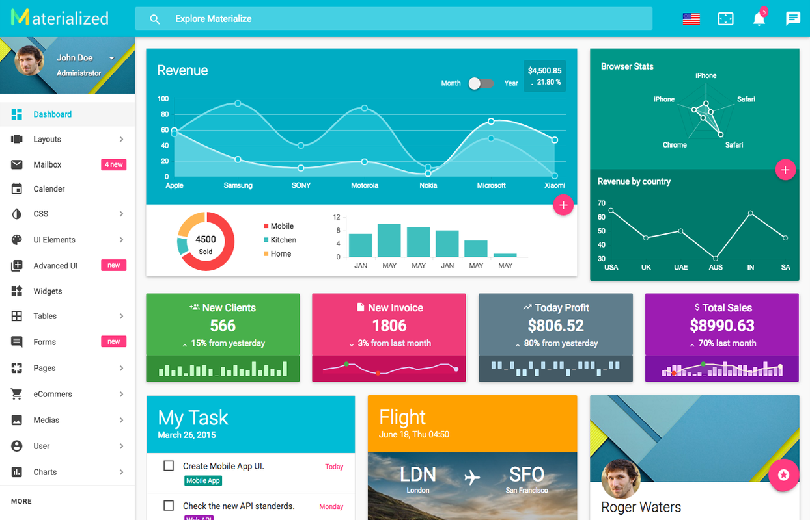
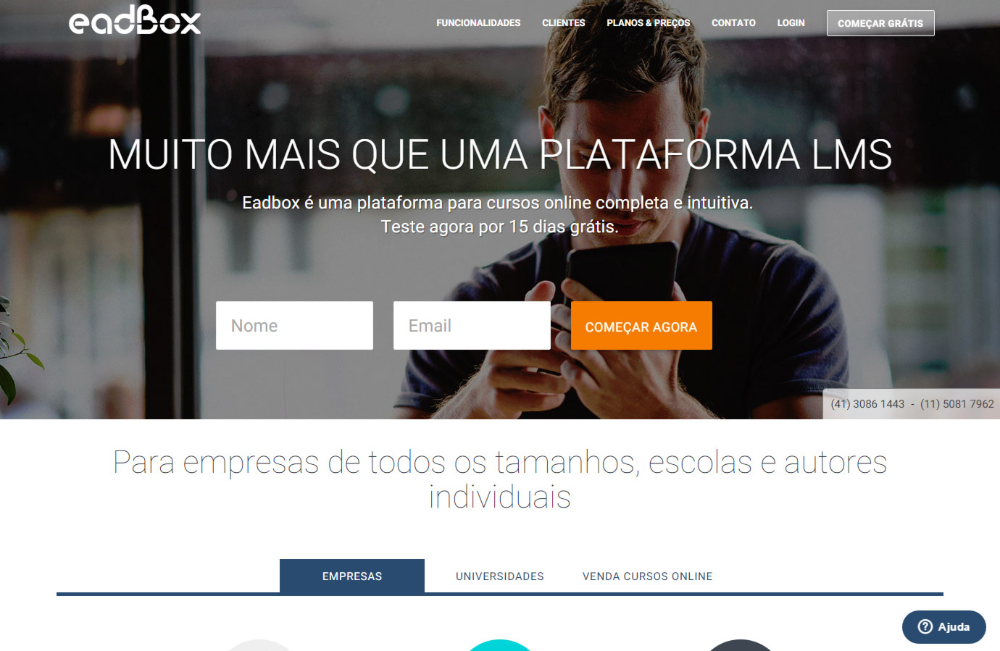

O UIkit é um framework front-end que facilita a criação de interfaces modernas e responsivas utilizando componentes prontos, leves e personalizáveis. Ele oferece uma ampla variedade de elementos, como botões, formulários, tabelas, modais e muito mais, permitindo que os desenvolvedores criem aplicativos web visualmente atraentes e funcionais de forma rápida e eficiente.
| Framework | Base visual | Componentes | Responsividade |
|---|---|---|---|
| Materialize | Material Design | Navbar, cards, modal e formulários | Sim |
| Bootstrap | Design próprio | Grande variedade de componentes | Sim |
| UIkit | Design modular e minimalista | Componentes leves e personalizáveis | Sim |
Obrigado por enviar seu feedback.